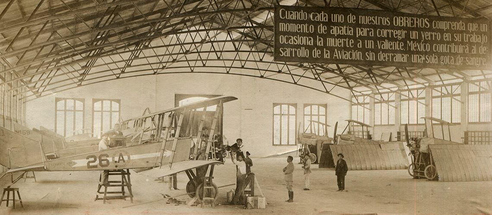
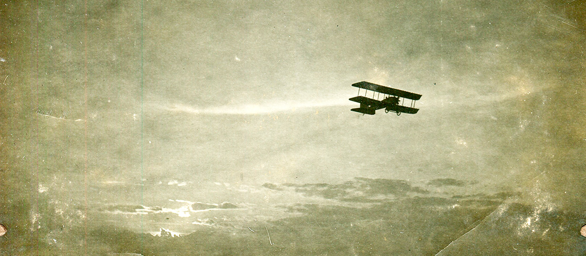

Stinson SR-5A
El vuelo era sin escalas, con la ruta señalada por Chalco, Cuautla, Iguala y Chilpancingo. El Stinson SR-5A fue recibido por Antonio Díaz Lombardo y así quedó establecido el servicio aéreo regular entre México y Acapulco.
Después de este vuelo inaugural, el día 7 de noviembre de 1934 se constituyó legalmente la empresa Aeronaves de México S.A.
Los aviones Stinson gozaron de gran fama en México desde que en 1927 uno de ellos fue utilizado por Joaquín González Pacheco y Fritz Bieler para su famoso vuelo sin escalas entre Windsor, Canadá y Tampico. Después de esto, Eddy Stinson vino personalmente a México para aprovechar la fama que había logrado su avión que también prestó un magnífico servicio entre 1927 y 1929 en la línea postal aérea de México-Nuevo Laredo que organizó Juan Guillermo Villasana.
La fábrica Stinson se convirtió en subsidiaria de la Cord Corporation, fabricante de automóviles (que a su vez era dueña ya de Lycoming Manufacturing Company, dedicada a la construcción de motores para aviación), en 1929. Aunque Edward Stinson falleció en 1932 a causa de un accidente en un Detroiter, la compañía continuó su marcha y en 1933 inició la producción de una serie de modelos SR, Stinson Reliant, que con ciertos cambios continuó siendo fabricada hasta 1941.
El Stinson SR era un monoplano de ala alta, cabina cerrada con capacidad para cuatro plazas y tren fijo, y estaba equipado con motor Lycoming radial R-680 de 215 HP.
Cuando Antonio Díaz Lombardo decidió formar la empresa Aeronaves de México, una de sus primeras acciones fue la de seleccionar los aviones adecuados para prestar el planeado servicio de México a Acapulco, uno de ellos precisamente un Stinson SR.
Nuestro primer avión, el Stinson SR-5A, se ha aventurado a cruzar cielos mexicanos y estadounidenses desde 1934, ¡conoce sus hazañas!
El sueño de volar en los cielos de México y todo el mundo para acortar la distancia entre las ciudades, se hizo realidad cuando Antonio Díaz Lombardo, un hombre emprendedor con negocios de transportación terrestre, conoció Acapulco, un puerto con enorme potencial turístico, y comprendió que el viaje en carretera, que duraba de dos a tres días, era agotador.

Es por ello que buscó un medio de transporte que fuera rápido y eficiente para que Acapulco se convirtiera en el centro turístico que estuviera a sólo dos horas de distancia, y, ese medio, era el transporte aéreo.
Después de haber investigado sobre los aviones que se fabricaban, en aquel entonces, Antonio Díaz Lombardo se decidió por el Stinson SR-5A con la matrícula NC14163, que se fabricó en mayo de 1934 en Wayne Michigan y fue vendido a una compañía de seguros.
El Stinson era una aeronave que sobrepasaba las necesidades de la aseguradora, por lo que la pusieron en venta y Díaz Lombardo la adquirió. También seleccionó, para pilotear el monoplano, a Julio Zinser, quien se instruyó en la Escuela Militar de aviación, el único lugar donde se podía aprender del arte aéreo, un año después de haberse recibido, se creó la Sección Técnica de Transporte Aéreo y le otorgaron la licencia número uno de piloto comercial.
Para cuando fue contactado para tripular el Stinson, ya tenía más de 100 vuelos entre la Ciudad de México y Acapulco con dos escalas: Iguala y Chilpancingo. De este modo, Díaz Lombardo, comenzó la construcción de caminos de progreso, tanto en la aviación mexicana como en el turismo nacional a través de la creación de la infraestructura. De esta manera, el turismo creció exponencialmente otorgando oportunidades a lugareños.
Para traer el avión Antonio Díaz Lombardo y Julio Zinser viajaron a Kansas City. El itinerario de regreso fue de tres días comenzando el 27 de agosto de 1934 y tuvo una duración de 12 horas: volaron en el Stinson de Kansas City a San Antonio haciendo dos escalas: primero en Tulsa y luego en Dallas.
El segundo día volaron de San Antonio a Tampico haciendo escala en Brownsville y, este itinerario, tuvo una duración de ocho horas aproximadamente. El tercer, y último día, salieron de Tampico para, por fin, llegar a la Ciudad de México.
Con gran pericia Zinser tripuló el avión el 14 de septiembre de 1934 con cuatro pasajeros a bordo del Stinson SR-5A con la matrícula XB-AJI, partiendo de la Ciudad de México para llegar a Acapulco con un costo de 30 pesos. El vuelo inaugural tanto de Aeronaves de México como de la ruta México-Acapulco, se emprendió en el campo aéreo Balbuena, que estaba en las orillas de la Ciudad de México y aterrizó en el campo de Los Hornos, un balneario ubicado en la playa del mismo nombre.
Este monoplano realizó 45 vuelos redondos entre México-Acapulco en sólo tres meses, también operó rutas especiales a Tehuacán, Puebla, Ometepec y Oaxaca. Gracias a la eficiencia y rapidez con la que el Stinson navegó en los cielos mexicanos, el camino ya estaba más firme para expandirse, pues en poco tiempo Aeronaves de México consiguió más concesiones para operar más rutas y con una flota que está en constante renovación.
Gracias a esta visión, Aeroméxico desempeñó un papel fundamental en el transporte aéreo y en el fortalecimiento del turismo en México, y en 23 años (el 8 de diciembre de 1957), se inauguró el primer vuelo con destino internacional, México-Nueva York.
Después de haber estado al servicio de México, el timón del Stinson SR-5A, voló en los cielos estadounidenses: Arizona, California y, finalmente, Alaska donde, durante 21 años, fue el taller de limpieza de oro; y, le costó 37 años para que lo dejarán como nuevo. En el 2013 ganó, en la categoría de transporte.
Ese mismo año Bob Schneberger adquirió al legendario Stinson. Hoy, después de múltiples pláticas y negociaciones, Aeroméxico y Schneberger acordaron el regreso a casa de la primera joya aeronáutica de la compañía.